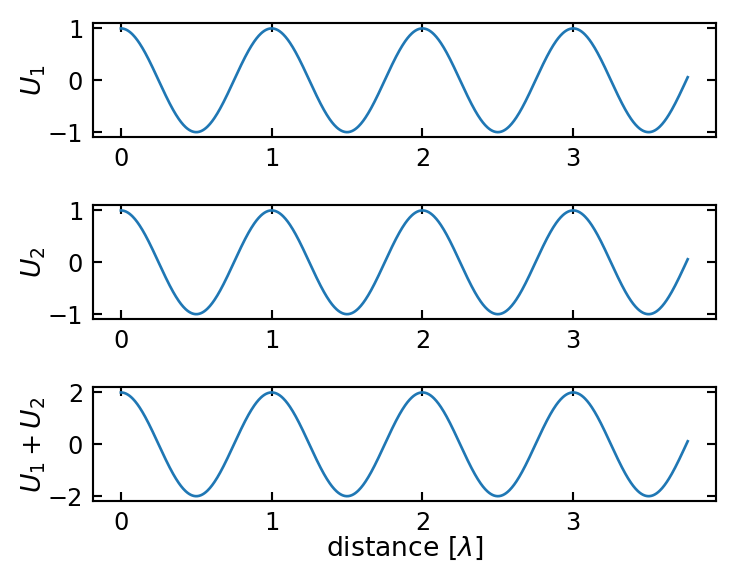
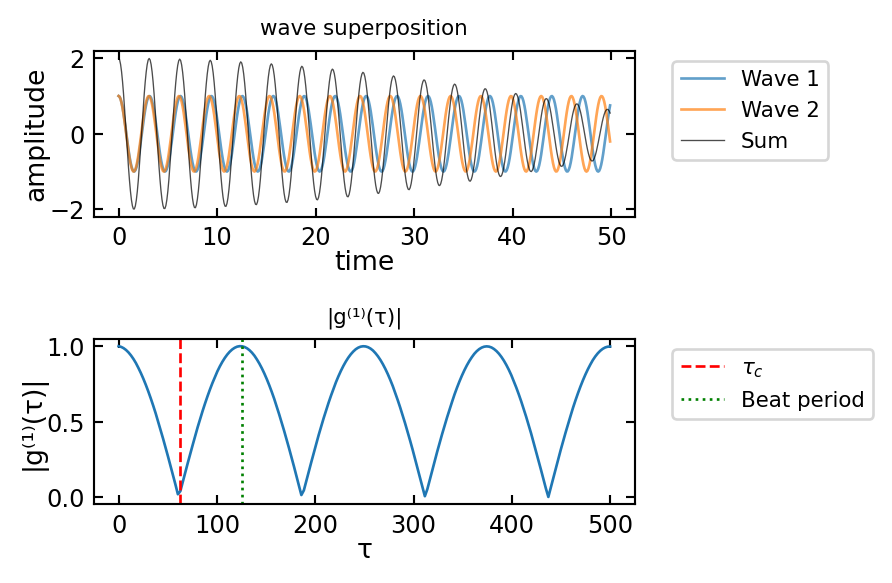

5 Interference in space and time
Interference is a fundamental physical phenomenon that demonstrates the superposition principle for linear systems. This principle, which states that the net response to multiple stimuli is the sum of the individual responses, is central to our understanding of wave physics. Interference appears across many domains of physics: in optics where it enables high-precision measurements and holography, in quantum mechanics where it reveals the wave nature of matter, and in acoustics where it forms the basis for noise cancellation technology. The ability of waves to interfere constructively (amplifying each other) or destructively (canceling each other) has profound practical applications, from the anti-reflective coatings on optical elements to the operational principles of interferometric gravitational wave detectors like LIGO. Understanding interference is therefore not just of theoretical interest but crucial for modern technology and experimental physics.
When two wave solutions \(U_1(\mathbf{r})\) and \(U_2(\mathbf{r})\) combine, their superposition gives:
\[ U(\mathbf{r})=U_1(\mathbf{r})+U_2(\mathbf{r}) \]
The resulting intensity is:
\[\begin{eqnarray} I &= &|U|^2\\ &= &|U_1+U_2|^2\\ &= &|U_1|^2+|U_2|^2+U^{*}_1 U_2 + U_1 U^{*}_2 \end{eqnarray}\]
The individual wave intensities are given by \(I_1=|U_1|^2\) and \(I_2=|U_2|^2\). Using this, we can express each complex wave amplitude in polar form, separating its magnitude (related to intensity) and phase:
\[ U_1=\sqrt{I_1}e^{i\phi_1} \] \[ U_2=\sqrt{I_2}e^{i\phi_2} \]
Substituting these expressions back into our interference equation and performing the algebra, the total intensity becomes:
\[ I=I_1+I_2+2\sqrt{I_1 I_2}\cos(\Delta \phi) \]
where \(\Delta \phi=\phi_2-\phi_1\) is the phase difference between the waves. This equation is known as the interference formula and contains three terms:
- \(I_1\) and \(I_2\): the individual intensities
- \(2\sqrt{I_1 I_2}\cos(\Delta \phi)\): the interference term that can be positive or negative
A particularly important special case occurs when the interfering waves have equal intensities (\(I_1=I_2=I_0\)). The equation then simplifies to:
\[ I=2I_0(1+\cos(\Delta \phi))=4I_0\cos^2\left(\frac{\Delta \phi}{2}\right) \]
This last form clearly shows that:
- Maximum intensity (\(4I_0\)) occurs when \(\Delta \phi = 2\pi n\) (constructive interference)
- Zero intensity occurs when \(\Delta \phi = (2n+1)\pi\) (destructive interference)
- The intensity varies sinusoidally with the phase difference
Constructive Interference
Occurs when \(\Delta \phi=2\pi m\) (where \(m\) is an integer), resulting in \(I=4I_0\)
Destructive Interference
Occurs when \(\Delta \phi=(2m-1)\pi\) (where \(m\) is an integer), resulting in \(I=0\)
5.0.1 Phase and Path Difference
The phase difference \(\Delta \phi\) can be related to the path difference \(\Delta s\) between the two waves. For two waves with the same frequency \(\omega\), we can write their complete phase expressions as:
\[\phi_1(\mathbf{r},t) = \mathbf{k}_1\cdot\mathbf{r} - \omega t + \phi_{01}\] \[\phi_2(\mathbf{r},t) = \mathbf{k}_2\cdot\mathbf{r} - \omega t + \phi_{02}\]
where:
- \(\mathbf{k}_i\) are the wave vectors
- \(\mathbf{r}\) is the position vector
- \(\omega\) is the angular frequency
- \(\phi_{0i}\) are initial phase constants
The instantaneous phase difference is then:
\[ \Delta\phi(\mathbf{r},t) = \phi_2(\mathbf{r},t) - \phi_1(\mathbf{r},t) = (\mathbf{k}_2-\mathbf{k}_1)\cdot\mathbf{r} + (\phi_{02}-\phi_{01}) \]
For stationary interference patterns, we typically observe the time-independent phase difference. When the waves travel along similar paths (same direction), this reduces to:
\[\Delta\phi = k\Delta s + \Delta\phi_0\]
where \(\Delta s\) is the path difference and \(\Delta\phi_0\) is any initial phase difference between the sources.
Phase Difference and Path Difference
A path difference \(\Delta s\) corresponds to a phase difference \(k\Delta s=2\pi\Delta s/\lambda\). Path differences of integer multiples of \(\lambda\) result in phase differences of integer multiples of \(2\pi\).
5.0.2 Interference of Waves in Space


The interference of the spherical and the plane wave (also the one of the two plane waves) give also an interesting result. The intensity resembles to be a snapshot of the shape of the wavefronts of the spherical wave. We can therefore measure the wavefronts of the spherical wave by interfering it with a plane wave. This is also the basic principle behind holography. There we use a reference wave to interfere with the wave that we want to measure. The interference pattern is recorded and can be used to reconstruct the wavefronts of the wave.
A super nice website to try out interference interactively is here.
5.0.3 Coherence
In the earlier consideration we obtained a general description for the phase difference between two waves. TIt is given by and contains the pathlength difference \(\Delta s\) and some intrinsic phase \(\Delta\phi_0\) that could be part of the wave generation process.
\[\Delta\phi = k\Delta s + \Delta\phi_0\]
To observe stationary interference, it is important that these two quantities are also stationary, i.e. the phase relation between the two waves is stationary. This relation between the phase of two waves is called coherence and was assumed in all the examples before.

The above image shows the timetrace of the amplitude of two wave with slightly different frequency. Due to the frequency, the waves run out of phase and have acquired a phase different of \(\pi\) after \(40\) fs.
The temporal coherence of two waves is now defined by the time it takes for the two waves to obtain a phase difference of \(2\pi\). The phase difference between two wave of frequency \(\nu_1\) and \(\nu_2\) is given by
\[ \Delta \phi = 2\pi (\nu_2-\nu_1)(t-t_0) \]
Here \(t_0\) refers to the time, when thw two waves were perfectly in sync. Lets assume that the two frequencies are seperarated from a central frequency \(\nu_0\) such that
\[ \nu_1=\nu_0-\Delta \nu/2 \] \[ \nu_2=\nu_0+\Delta \nu/2 \]
Inserting this into the first equation yields
\[ \Delta \phi = 2\pi \Delta \nu \Delta t \]
with \(\Delta t=t-t_0\). We can now define the coherence time as the time interval over which the phase shift \(\Delta \phi\) grows to \(2\pi\), i.e. \(\Delta \phi=2\pi\). The coherence time is thus
\[ \tau_{c}=\Delta t =\frac{1}{\Delta \nu} \]
Thus the temporal coherence and the frequency distribution of the light are intrisincly connected. Monochromatic light has \(\Delta nu=0\) and thus the coherence time is infinitely long. Light with a wide spectrum (white light for example) therefore has and extremly short coherence time.
The coherence time is also connected to a coherence length. The coherence length \(L_c\) is given by the distance light travels within the coherence time \(\tau_c\), i.e.
\[ L_c=c\tau_c \]
Coherence
Two waves are called coherent, if they exihibit a fixed phase relation in space or time relation over time. It measures their ability to interfer. The main types of coherence are
5.0.4 Temporal Coherence
- Measures phase correlation of a wave with itself at different times
- Characterized by coherence time \(\tau_c\) and coherence length \(L_c = c\tau_c\)
- Related to spectral width: \(\tau_c = 1/\Delta\nu\)
- Perfect for monochromatic waves (single frequency)
- Limited for broad spectrum sources (like thermal light)
5.0.5 Spatial Coherence
- Measures phase correlation between different points in space
- Important for interference from extended sources
- Determines ability to form interference patterns
- Related to source size and geometry
Coherence is a property of the light source and is connected to the frequency distribution of the light. Sources can be:
- Fully coherent: ideal laser
- Partially coherent: real laser
- Incoherent: thermal light
More General Description of Coherence
While the above definition provides an intuitive picture based on frequency spread, we can describe coherence more rigorously using correlation functions. These functions measure how well a wave maintains its phase relationships:
In real physical systems, perfect coherence (constant phase relationship) between waves is rare. Partial coherence describes the degree to which waves maintain a consistent phase relationship over time and space. We can characterize this using correlation functions:
- Temporal Coherence The complex degree of temporal coherence is given by:
\[g^{(1)}(\tau) = \frac{\langle U(t)U^*(t+\tau)\rangle}{\sqrt{\langle|U(t)|^2\rangle\langle|U(t+\tau)|^2\rangle}}\]
where:
- \(\tau\) is the time delay
- \(U(t)\) is the electric field
- \(\langle...\rangle\) denotes time averaging
- Spatial Coherence Similarly, spatial coherence between two points is characterized by:
\[g^{(1)}(\mathbf{r}_1,\mathbf{r}_2) = \frac{\langle U(\mathbf{r}_1)U^*(\mathbf{r}_2)\rangle}{\sqrt{\langle|U(\mathbf{r}_1)|^2\rangle\langle|U(\mathbf{r}_2)|^2\rangle}}\]
The obtained correlation functions can be used to calculate the coherence time and length and have the following properties:
- \(|g^{(1)}| = 1\) indicates perfect coherence
- \(|g^{(1)}| = 0\) indicates complete incoherence
- \(0 < |g^{(1)}| < 1\) indicates partial coherence
A finite coherence time and length is leads to partial coherence affects interference visibility through:
- Reduced contrast in interference patterns
- Limited coherence length/area
- Spectral broadening

Besides different frequencies the coherence time can also be affected by phase jumps. The following example shows two waves with the same frequency but multiple phase jumps. The temporal correlation function shows the decoherence due to the phase jumps.
Multiple Wave Interference
So far we looked at the interference of two waves, which was a simplification as I mentioned already earlier. Commonly there will be a multitude of partial waves contribute to the oberved intereference. This is what we would like to have a look at now. We will do that in a quite general fashion, as the resulting formulas will appear several times again for different problems.
Nevertheless we will make a difference between
- multiwave interference of waves with the constant amplitude
- multiwave interference of waves with decreasing amplitude
Especially the latter is often occuring, if we have multiple reflections and each reflection is only a fraction of the incident amplitude.
5.0.6 Multiple Wave Interference with Constant Amplitude
In the case of constant amplitude (for example realized by a grating, which we talk about later), the total wave amplitude is given according to the picture below by
\[ U=U_1+U_2+U_1+U_3+\ldots+U_M \]
where we sum the amplitude over \(M\) partial waves. Between the neighboring waves (e.g. \(U_1\) and \(U_2\)), we will assume a phase difference (because of a path length difference for example), which we denote as \(\Delta \phi\).
The amplitude of the p-th wave is then given by
\[ U_p=\sqrt{I_0}e^{i(p-1)\Delta \phi} \]
with the index \(p\) being an interger \(p=1,2,\ldots,M\), \(h=e^{i\Delta \phi}\) and \(\sqrt{I_0}\) as the amplitude of each individual wave. The total amplitude \(U\) can be then expressed as
\[ U=\sqrt{I_0}\left (1+h+h^2+\ldots +h^{M-1}\right) \]
which is a geometric sum. We can apply the sum formula for geometric sums to obtain
\[ U=\sqrt{I_0}\frac{1-h^M}{1-h}=\sqrt{I_0}\frac{1-e^{iM\Delta \phi}}{1-e^{i\Delta \phi}} \]
We now have to calculate the intensity of the total amplitude
\[ I=|U|^2=I_{0}\left | \frac{e^{-iM\Delta \phi/2}-e^{iM\Delta \phi/2}}{e^{-i\Delta \phi/2}-e^{i\Delta \phi/2}}\right |^2 \]
which we can further simplify to give
\[ I=I_{0}\frac{\sin^2(M\Delta \phi/2)}{\sin^2(\Delta \phi/2)} \]

The result is therefore an oscillating function. The numerator \(\sin^2(M\Delta \phi/2)\) shows and oscillation frequency, which is by a factor of \(M\) higher than the one in the denominator \(\sin^2 (\Delta \phi/2)\). Therefore the intensity pattern is oscillating rapidly and creating a first minimum at
\[ \Delta \phi=\frac{2\pi}{M} \]
This is an important result, since it shows that the number of sources \(M\) determines the position of the first minimum and the interference peak gets narrower with increasing \(M\). Since the phase difference \(\Delta \phi\) between neighboring sources is the same as for the double slit experiment, i.e. \(\Delta \phi=2\pi d/\lambda \sin(\theta)\), we can also determine the angular position of the first minimum. This is given by
\[ \sin(\theta_\textrm{min})=\frac{1}{M}\frac{\lambda}{d} \]
This again has the common feature that it scales as \(\lambda/d\). A special situation occurs, whenever the numerator and the denominator become zero. This will happen whenever
\[ \Delta \phi=m 2\pi \]
where \(m\) is an integer and denotes the interference order, i.e. the number of wavelength that neighboring partial waves have as path length difference. In this case, the intensity distributiion will give us
\[ I=I_0 \frac{0}{0} \]
and we have to determine the limit with the help of l’Hospitals rule. The outcome of this calculation is, that
\[ I(\Delta \phi=m2\Delta \pi)=M^2 I_0 \]
which can be also realized when using the small angle approximation for the sine functions.
5.0.6.1 Wavevector Representation
We would like to introduce a different representation of the multiple wave interference of the grating, which is quite insightful. The first order (\(m=1\)) constructive interference condition is given by
\[ \frac{1}{\lambda}\sin{\theta}= \frac{1}{d} \]
which also means that
\[ \frac{2\pi}{\lambda}\sin{\theta}= \frac{2\pi}{d} \]
This can be written as
\[ k \sin{\theta}= K \]
where \(k\) is the magnitude of the wavevector of the light and \(K\) is the wavevector magnitude that corresponds to the grating period \(d\). As the magnitude of the wavevector of the light is conserved, the wavevectors of the incident light and the light traveling along the direction of the first interence peak form the sides of an equilateral triangle. This is shown in the following figure.

This means that the diffraction grating is providing a wavevector \(K\) to alter the direction of the incident light. This is again a common feature reappearing in many situations as for example in the X-ray diffraction of crystals.
Multiple Wave Interference with Decreasing Amplitude
We will turn our attention now to a slight modification of the previous multiwave interference. We will introduce a decreasing amplitude of the individual waves. The first wave shall have an amplitude \(U_1=\sqrt{I_0}\). The next wave, however, will not only be phase shifted but also have a smaller amplitude.
\[ U_2=h U_1 \]
where \(h=re^{i\phi}\) with \(|h|=r<1\). \(r\) can be regarded as a reflection coefficient, which deminishes the amplitude of the incident wave. According to that the intensity is reduced by
\[ I_2=|U_2|^2=|h U_1|^2=r^2 I_1 \]
The intensity of the incident wave is multiplied by a factor \(r^2\), while the amplitude is multiplied by \(r\). Note that the phase factor \(e^{i\Delta\phi}\) is removed when taking the square of this complex number.
Intensity at Boundaries
The amplitude of the reflected wave is diminished by a factor \(r\le 1\), which is called the reflection coefficient. The intensity is diminished by a factor \(R=|r|^2\le1\), which is the reflectance.
In the absence of absorption, reflectance \(R\) and transmittance \(T\) add to one due to energy conservation.
\[ R+T=1 \]
Consequently, the third wave would be now \(U_3=hU_2=h^2U_1\). The total amplitude is thus
\[ U=U_1+U_2+U_3+\ldots+U_M = \sqrt{I_0}(1+h+h^2+\ldots) \]

This yields again
\[ U=\sqrt{I_0}\frac{(1-h^M)}{1-h}=\frac{\sqrt{I_0}}{1-r e^{i\Delta\phi}} \]
Calculating the intensity of the waves is giving
\[ I=|U|^2=\frac{I_{0}}{|1-re^{i\Delta\phi}|^2}=\frac{I_0}{(1-r)^2+4r\sin^2(\Delta\phi/2)} \]
which is also known as the Airy function. This function can be further simplified by the following abbrevations
\[ I_{\rm max}=\frac{I_0}{(1-r)^2} \]
and
\[ \mathcal{F}=\frac{\pi \sqrt{r}}{1-r} \]
where the latter is called the Finesse. With those abbrevations, we obtain
\[ I=\frac{I_{\rm max}}{1+4\left(\frac{\mathcal{F}}{\pi}\right)^2\sin^{2}(\Delta\phi/2)} \]
for the interference of multiple waves with decreasing amplitude.
This intensity distribution has a different shape than the one we obtained for multiple waves with the same amplitude.
We clearly observe that with increasing Finesse the intensity maxima, which occur at multiples fo \(\pi\) get much narrower. In addition the regions between the maxima show better contrast and fopr higher Finesse we get complete destructive interference.
5.0.7 Light beating
5.0.7.1 Beating of two waves
Let us consider now interference in the time domain. We introduce two monochromatic waves of frequencies \(\nu_1\) and \(\nu_2\). We will denote their amplitudes by \(\sqrt{I_1}\) and \(\sqrt{I_2}\).
The total amplitude is thus
\[ U=U_1+U_2 = \sqrt{I_1} \exp(i2\pi\nu_1 t) + \sqrt{I_2} \exp(i2\pi\nu_2 t) \]
such that we obtain an Intensity
\[ I=|U|^2 = I_1 + I_2 + 2\sqrt{I_1I_2}\cos(2\pi(\nu_1-\nu_2)t) \]
The intensity is thus time dependent and oscillates at a frequency \(\nu_1-\nu_2\), which is the so-called beating frequency. Similar schemes are used in optical heterodyne detection but also in acoustics when tuning your guitar.
5.0.7.2 Multiple wave beating and pulse generation
Consider now a whole set of \(M=2L+1\) each with an amplitude \(\sqrt{I_0}\). The frequencies of the waves are given by \(\nu_q=\nu_0+q\Delta\nu\) with \(q=-L,\dots,L\) with \(\nu_0\) beeing the center frequency of the spectrum and \(\Delta \nu\) the frequency spacing. We will assume that \(\Delta nu<<\nu_0\) such that the total amplitude of the waves is given by
\[ U=\sum_{q=-L}^L \sqrt{I_0} \exp(i2\pi(\nu_0+q\Delta\nu)t) \]
The total intensity can then be calculated in the same way as for the multiple source in space before. Using \(\phi=2\pi \Delta \nu t\) we obtained \[ I(t)=I_0 \frac{\sin^2(M\pi t/T)}{\sin^2(\pi t/T)} \]
with \(T=1/\Delta\nu\) and a maximum intensity of \(I_{\rm max}=M^2 I_0\).

5.0.8 Frequency Combs: Phase-Coherent Temporal Interference
The pulse generation we just examined leads us to an important concept in modern optics: frequency combs. A frequency comb is a spectrum consisting of a series of discrete, equally spaced frequency lines that results from a train of phase-coherent pulses in the time domain.
5.0.8.1 From Pulse Trains to Frequency Combs
Let’s extend our understanding of multiple wave beating to include phase coherence. When we have a set of equidistant frequency components that maintain a fixed phase relationship, the resulting time-domain signal is a periodic train of pulses. Conversely, a periodic train of pulses in the time domain corresponds to a frequency comb in the spectral domain.
The relationship between these domains is described by the Fourier transform. For a pulse train with repetition rate \(f_{rep} = \Delta\nu\) (the spacing between frequency components), the frequency spectrum consists of lines at:
\[f_n = f_0 + n \cdot f_{rep}\]
where \(f_0\) is the carrier-envelope offset frequency and \(n\) is an integer.
5.0.8.2 Mathematical Description
Consider a train of pulses described by the electric field:
\[E(t) = \sum_{m=-\infty}^{\infty} A(t - m T_{rep}) e^{i[\omega_c(t - m T_{rep}) + \phi_{CE} \cdot m + \phi_0]}\]
where: - \(A(t)\) is the pulse envelope - \(T_{rep} = 1/f_{rep}\) is the pulse repetition period - \(\omega_c\) is the carrier frequency - \(\phi_{CE}\) is the carrier-envelope phase slip (the phase shift from pulse to pulse) - \(\phi_0\) is a constant phase
The Fourier transform of this pulse train gives us a frequency comb with:
\[f_0 = \frac{\phi_{CE}}{2\pi} \cdot f_{rep}\]
This carrier-envelope offset frequency (\(f_0\)) is crucial for determining the absolute positions of the comb lines.

5.0.8.3 Applications of Frequency Combs
Frequency combs have revolutionized precision measurements in physics and enabled numerous applications:
Optical Clocks: Frequency combs provide a “gear mechanism” to count optical frequencies, enabling optical atomic clocks that are orders of magnitude more precise than conventional atomic clocks.
Precision Spectroscopy: The precise and stable frequency references allow for high-resolution molecular spectroscopy.
Calibration of Astronomical Spectrographs: Frequency combs enable the detection of Earth-like exoplanets by providing precise wavelength calibration for astronomical instruments.
Distance Measurements: They enable precise absolute distance measurements used in applications from gravitational wave detectors to satellite formation flying.
Telecommunications: Frequency combs can be used for wavelength-division multiplexing in optical communications.
5.0.8.4 Connection to Mode-Locked Lasers
In practice, frequency combs are often generated using mode-locked lasers. In such lasers, multiple longitudinal modes of the laser cavity oscillate with a fixed phase relationship, resulting in short pulses. The Fourier transform of these regularly spaced pulses is precisely the frequency comb.
The mode-locking can be achieved through various mechanisms:
- Active mode-locking: Using an external modulator driven at the cavity round-trip frequency
- Passive mode-locking: Using saturable absorbers or Kerr-lens mode-locking
The 2005 Nobel Prize in Physics was awarded to Theodor W. Hänsch and John L. Hall for their contributions to the development of laser-based precision spectroscopy, including the optical frequency comb technique.
5.0.8.5 The Fundamental Link Between Time and Frequency Domains
Frequency combs beautifully illustrate the duality between time and frequency domains in physics. A perfectly periodic sequence of events in time (the pulse train) corresponds to discrete, equally spaced frequencies. The more precise and stable the temporal pattern, the more precise and stable the frequency components.
This duality is fundamental to many areas of physics and engineering, from quantum mechanics to signal processing, and frequency combs represent one of its most elegant and useful manifestations in optics.